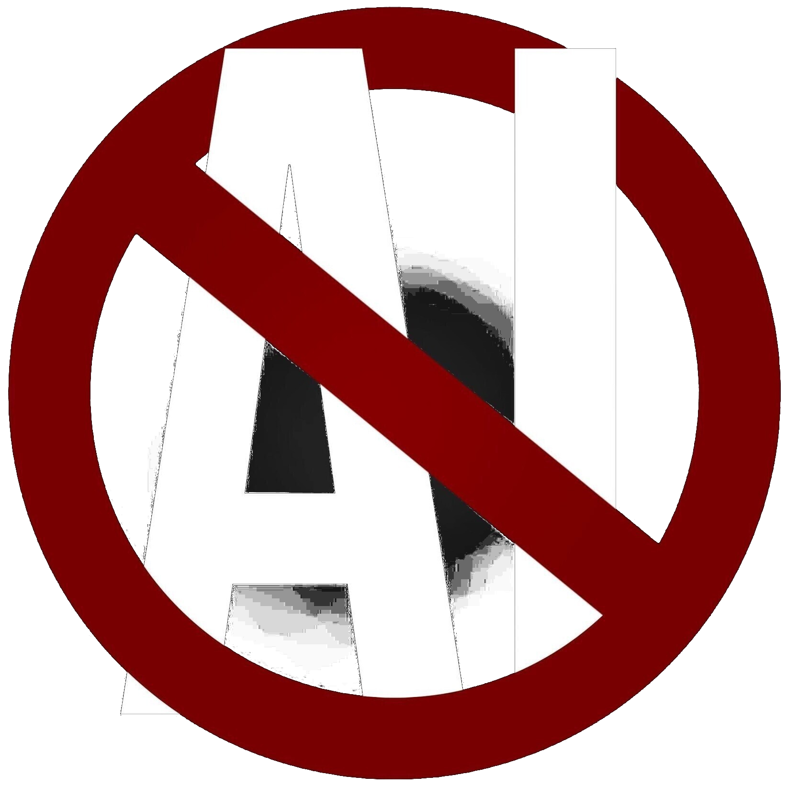

Preface: what art means to me
My entire life was, is, and most probably will be until I die, extremely connected to art.
I've enjoyed reading comics, books, listening to music and playing games ever since I remember
existing. All of that also shaped me, in many ways, but consistently it was one of the biggest
teachers - "I wouldn't be the same person without art" sounds almost banal and subtle compared
to how much it actually affected me.
From industrialist revolt and critical approach to society, through melancholic love to beauty
of goth subculture and music, Tarkovsky movies speaking the language of empathetic spirituality,
to the absurd of dadaist art and avant-garde, beauty of the nature of romantic paintings,
orientalist art of europeans and actual oriental art of japanese, the pain of heartbreaks found
in 80s music, and last but not least my two maestros: a bearded jester Terry Pratchett, and
a bearded storyteller Don Rosa. Art is everything to me, and through it I experience the
world, relationships, nature, faith.
Through it I also try to speak, as art is for me a language, a communication form that gives us
a way to escape the precise, utilitarian, material world. The ambiguity of language, visual
and sound is what softens us to the other. And it's a beautiful way we can show ourselves to
each other: through poem, book, song, painting. I'm maximalistic in definition of art, so yes,
a heartfelt message to someone is, for me, an art in itself - there's not really a big difference
between Discord message and a letter, and from letter to a book or poem, if we think about it that way.
Understanding the above is crucial to know from where my position to genAI comes from: it is from place
of seeing the intrusion into my most beloved and dear garden, a place which was giving me both peace
and a sense of destination in the world. The most stable and everlasting home I could find as a human
being.
You can feel safe
Have I used AI?
Why am I against? Why so radically?
|

|